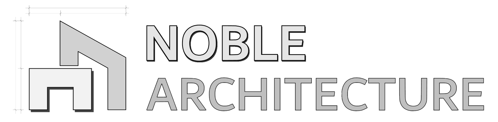

The LAS file is only ever read, never changed. The model remembers which LAS it uses, where the cloud sits and the clip box; Reload Point Cloud brings the points back next time.
Nothing loads until you press Reload. The file is checked against the model's record (point count and survey position) before it is used.
What units are this file's coordinates in?
The most points drawn at once. Raise it for more detail.
Edit Clip Box shows the box in the model so you can move its sides with the mouse.
Limits are in the model's units. Type a value and press Enter. Clipping only hides points; the LAS is never changed.
A scene remembers the clip box. Click a name to switch to it. Scenes are saved in this SketchUp model.
The gimbal point sits at:
Rotation
Type a value and press Enter. X, Y and Z place the gimbal point (and the cloud with it) in the model's units; rotations are in degrees and turn the cloud about the gimbal point. The cloud is only ever moved and rotated, never scaled.
Rotate also snaps to model geometry (endpoints, edges, axes), so you can line the cloud up with lines you have drawn.
Saves the cloud file, units, position, rotation, lock, clip box, clip scenes and display settings to one JSON file. No point data.
Reload runs every Ruby file again and reopens this window, so code, layout, style and default-config changes apply without restarting SketchUp.
| Ruby modules | Reloaded |
| HTML, CSS and JS | Reloaded (window reopens) |
| Default config JSON | Read again |
| Native renderer (DLL) | Swapped in if rebuilt; re-import the LAS afterwards |
The model keeps three small text records: which LAS it uses, where the cloud sits (position, rotation, gimbal point, lock) and the clip box with its scenes. They never load anything by themselves and never stop a model from opening; use Reload Point Cloud on the View tab. A copy of the same records is kept on this computer, so a day's alignment survives SketchUp closing without saving.
Working files for this plugin. Everything here can be rebuilt from the original LAS.
Preferences on this computer, such as the last tab and the last LAS folder.
Details behind any message in the status bar, newest first.
LAS reading: LASzip 3.5.0 (Apache 2.0), included with the plugin.